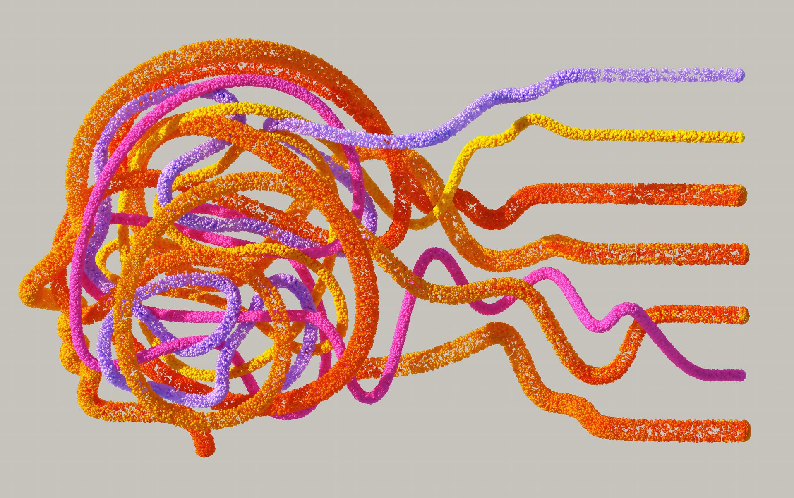

Schulen & Lehrkräftebildung
Professionalisierung und Entwicklung für eine zukunftsfähige Berufliche Bildung.
- Lehrkräftefortbildung zu KI und Beruflicher Bildung
- Unterrichts- und Schulentwicklung
- Begleitung von Veränderungsprozessen
Wie entstehen
Lern- und
Entwicklungsräume,
die eigenes Denken
provozieren
und professionelles
Handeln ermöglichen?
Ich forsche, lehre und lerne an der spannenden Schnittstelle von Theorie und Praxis der Beruflichen Bildung.
In meiner Arbeit verbinde ich wissenschaftliche Tiefe mit praktischer Relevanz. Ich entwickle und erforsche Theorien, Konzepte und Modelle für die Berufliche Bildung, die den Wandel in Beruf und Gesellschaft aktiv mitgestalten.
Dabei begleite ich Schulen und Hochschulen ebenso wie Unternehmen und ihre Personal- und Ausbildungsverantwortlichen bei der Gestaltung zukunftsfähiger Bildungs- und Entwicklungsprozesse – mit besonderem Fokus auf den verantwortungsvollen und didaktisch sinnvollen Einsatz Künstlicher Intelligenz, die Professionalisierung von Lehrkräften und Ausbildungsverantwortlichen sowie die Entwicklung von Schule, Unterricht und Aus- und Weiterbildung in Unternehmen.
Mein Ziel ist es, Lern- und Entwicklungsräume zu gestalten, die Denken herausfordern, reflektiertes Handeln ermöglichen und Bildung wirksam machen. Auf dieser Seite bündele ich meine Forschung, Konzepte und Praxisbeiträge zur Beruflichen Bildung und mache Ergebnisse, Materialien und zentrale Erkenntnisse transparent zugänglich.
Wenn Sie sich austauschen oder eine Kooperation anstoßen möchten, schreiben Sie mir gern

Eine adaptive Workshopreihe für Lehrkräfte
Weiterlesen →
Die Ausprägungen und passende Schlussfolgerungen
Weiterlesen →Vom individuellen Einstieg zum fertigen Unterrichtspaket
Weiterlesen →Eine spezifische Klasse KI-Tools zur Lernunterstützung
Weiterlesen →Der Expertise-Reversal-Effect und seine Auswirkungen
Weiterlesen →Ein vielversprechender Ansatz für die Professionalisierung
Weiterlesen →Das didaktische Zielbild einer gebildeten Fachkraft
Weiterlesen →Ich begleite Bildungs- und Entwicklungsprozesse in Schulen, Unternehmen und Hochschulen – mit einem besonderen Fokus auf den verantwortungsvollen und didaktisch sinnvollen Einsatz von KI.
Professionalisierung und Entwicklung für eine zukunftsfähige Berufliche Bildung.
KI in der Aus- und Weiterbildung von Unternehmen reflektiert einordnen und wirksam gestalten.
Erkenntnisse gemeinsam entwickeln, erproben und für die Praxis nutzbar machen.
Für Austausch, Vorträge, Workshops sowie Forschungs- und Entwicklungskooperationen bin ich gern ansprechbar.